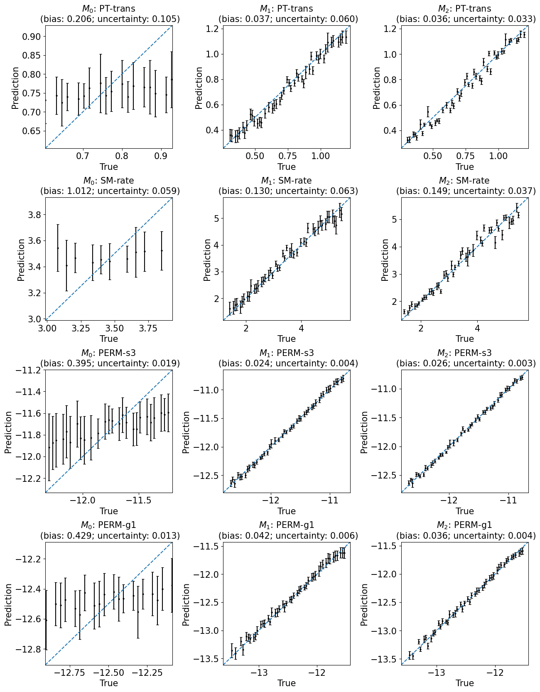

This notebook is used to postprocessing the inverse modeling results of the cloud chamber model.
# Libraries
from pathlib import Path
import pandas as pd
import numpy as np
import matplotlib.pyplot as plt
from kim.map import KIM
from kim.data import Data
from kim.mapping_model import MLP
from kim.utils import plot_sensitivity_mask, plot_sensitivity, plot_1to1_scatter, plot_1to1_uncertainty
import warnings
warnings.filterwarnings("ignore")
%load_ext autoreload
%autoreload 2
%matplotlib inline
The autoreload extension is already loaded. To reload it, use:
%reload_ext autoreload
Read the data#
# File and folder paths
dir_case = Path("./")
f_para = dir_case / "./data/Output_para.csv"
f_state = dir_case / "./data/Input_logq.csv"
df_para, df_state = pd.read_csv(f_para, index_col=0),pd.read_csv(f_state, index_col=0)
y_vars, x_vars = df_para.keys().to_list(), df_state.keys().to_list()
y, x = df_para.values, df_state.values
x.shape, y.shape
((396, 1461), (396, 8))
# Parameters to be estimated
y_vars = ['PT-snow', 'PT-trans', 'SM-rate', 'SM-diff', 'PERM-s3', 'PERM-s4', 'PERM-g1', 'PERM-g4']
Load the preliminary analysis results#
f_data_save = dir_case / "results/data"
data = Data(x, y)
data.load(f_data_save)
Plot the sensitivity analysis results#
fig, ax = plt.subplots(1, 1, figsize=(8, 4))
plot_sensitivity(data.sensitivity.T, ylabels=x_vars, xlabels=y_vars)
ax.set(title='Gloabal sensitivity using mutual information');
fig, ax = plt.subplots(1, 1, figsize=(8, 4))
plot_sensitivity_mask(data.sensitivity_mask.T, ylabels=x_vars, xlabels=y_vars)
ax.set(title='Global sensitivity mask')
data.sensitivity_mask.sum(axis=0), data.sensitivity_mask.sum()
(array([ 24, 512, 287, 547, 618, 13, 1123, 513]), np.int64(3637))
fig, ax = plt.subplots(1, 1, figsize=(8, 4))
plot_sensitivity_mask(data.cond_sensitivity_mask.T, ylabels=x_vars, xlabels=y_vars)
ax.set(title='Global sensitivity + Redundancy filtering mask')
data.cond_sensitivity_mask.sum(axis=0), data.cond_sensitivity_mask.sum()
(array([ 3, 184, 89, 264, 353, 1, 547, 53]), np.int64(1494))
Load the mapping results#
kim1: The naive inverse mapping from all \(\mathbf{Y}\) to all \(\mathbf{X}\), labeled as \(M_0\)kim2: The knowledge-informed inverse mapping from sensitive \(\mathbf{Y}\) to each of \(\mathbf{X}\) using global sensitivity analysis, labeled as \(M_1\)kim3: The knowledge-informed inverse mapping from sensitive \(\mathbf{Y}\) to each of \(\mathbf{X}\) using global sensitivity analysis + redundancy filtering check, labeled as \(M_2\)
f_kim_save1 = dir_case / "results/map_many2many"
f_kim_save2 = dir_case / "results/map_many2one"
f_kim_save3 = dir_case / "results/map_many2one_cond"
# Initialize three diffferent KIMs
kim1 = KIM(data, map_configs={}, map_option='many2many')
kim2 = KIM(data, map_configs={}, mask_option="sensitivity", map_option='many2one')
kim3 = KIM(data, map_configs={}, mask_option="cond_sensitivity", map_option='many2one')
# Load the trained mappings
kim1.load(f_kim_save1)
kim2.load(f_kim_save2)
kim3.load(f_kim_save3)
# print(np.mean([loss[-1] for loss in kim1.maps[0].loss_val_ens]))
# print(np.mean([loss[-1] for loss in kim2.maps[0].loss_val_ens]))
# print(np.mean([loss[-1] for loss in kim3.maps[0].loss_val_ens]))
# # kims = [kim1, kim2, kim3]
# Calculate the performance metrics
kims = [kim1, kim2, kim3]
labels = ['$M_0$', '$M_1$', '$M_2$']
results = {}
for i,kim in enumerate(kims):
label = labels[i]
results[label] = kim.evaluate_maps_on_givendata()
Plot the training results#
Prediction versus true#
train_or_test = 'test'
fig, axes = plt.subplots(3, len(y_vars), figsize=(35,15))
for i in range(len(y_vars)):
y_var = y_vars[i]
for j in range(3):
model = labels[j]
r = results[model]
ax = axes[j, i]
plot_1to1_scatter(r, ax=ax, iy=i, train_or_test='test', model=model, y_var=y_var)
plt.subplots_adjust(hspace=0.3, wspace=0.3)
Performance versus true (with uncertainty)#
train_or_test = 'test'
fig, axes = plt.subplots(3, len(y_vars), figsize=(35, 15))
for i in range(len(y_vars)):
y_var = y_vars[i]
for j in range(3):
model = labels[j]
r = results[model]
ax = axes[j, i]
plot_1to1_uncertainty(r, iy=i, ax=ax, train_or_test=train_or_test, model=model, y_var=y_var)
plt.subplots_adjust(hspace=0.4, wspace=0.4)
train_or_test = 'test'
fig, axes = plt.subplots(4, 3, figsize=(15, 20))
for ind,i in enumerate([1, 2, 4, 6]):
y_var = y_vars[i]
for j in range(3):
model = labels[j]
r = results[model]
ax = axes[ind,j]
plot_1to1_uncertainty(r, iy=i, ax=ax, train_or_test=train_or_test, model=model, y_var=y_var)
plt.subplots_adjust(hspace=0.4, wspace=0.4)

Backup plots#
# train_or_test = 'test'
# y_vars_plot = ['PERM-s3', 'PERM-g1', 'SM-diff', 'PT-trans']
# models_plot = ['Original inverse mapping', 'KIM']
# fig, axes = plt.subplots(len(models_plot),len(y_vars_plot),figsize=(15,10))
# for i,y_var in enumerate(y_vars_plot):
# for j,model in enumerate(models_plot):
# r = results[model]
# ax = axes[j,i]
# ivar = y_vars.index(y_var)
# for k in range(100):
# ax.scatter(r['true'][train_or_test][...,ivar], r['ens predict'][train_or_test][k,...,ivar],
# color='lightgrey', label='ensemble' if k ==0 else None)
# ax.scatter(r['true'][train_or_test][...,ivar], r['weighted mean predict'][train_or_test][...,ivar],
# color='black', label='weighted mean')
# lim = ax.get_xlim()
# ax.set(xlim=lim, ylim=lim, xlabel='True' if j==1 else '', ylabel='Prediction' if i==0 else '', title=f"{y_var}")
# # ax.legend()
# plt.subplots_adjust(hspace=0.3, wspace=0.3)
# train_or_test = 'test'
# fig, axes = plt.subplots(len(y_vars),3,figsize=(15,40))
# for i in range(len(y_vars)):
# y_var = y_vars[i]
# for j in range(3):
# model = labels[j]
# r = results[model]
# ax = axes[i, j]
# plot_1to1_scatter(r, ax=ax, iy=i, train_or_test='test', model=model, y_var=y_var)
# # for k in range(100):
# # ax.scatter(r['true'][train_or_test][...,i], r['ens predict'][train_or_test][k,...,i],
# # color='lightgrey', label='ensemble' if k ==0 else None)
# # ax.scatter(r['true'][train_or_test][...,i], r['weighted mean predict'][train_or_test][...,i],
# # color='black', label='weighted mean')
# # lim = ax.get_xlim()
# # ax.set(xlim=lim, ylim=lim, xlabel='True', ylabel='Prediction', title=f"{model}: {y_var}")
# # ax.legend()
# train_or_test = 'test'
# fig, axes = plt.subplots(len(y_vars),3,figsize=(15,40))
# for i in range(len(y_vars)):
# y_var = y_vars[i]
# for j in range(3):
# model = labels[j]
# r = results[model]
# ax = axes[i,j]
# x = r['true'][train_or_test][...,i]
# y = r['weighted mean predict'][train_or_test][...,i]
# yens = r['ens predict'][train_or_test][...,i]
# w = r['weights'][...,i]
# std = np.sqrt(np.average((yens-y)**2, weights=w, axis=0))
# ax.errorbar(x, y, std, color='black', ecolor='grey', linestyle='None', fmt='o', markersize=2, capsize=2)
# lim = ax.get_xlim()
# ax.plot(lim, lim, '--', color='tab:blue')
# ax.set(xlim=lim, ylim=lim, xlabel='True', ylabel='Prediction', title=f"{model}: {y_var}")